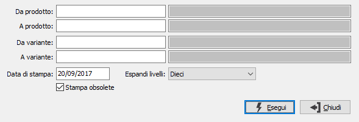

Stampa distinta base
La procedura consente la stampa delle distinte base presenti, con la possibilità di stampare la composizione o solo l'elenco dei prodotti con distinta base.

DA PRODOTTO: codice dell'articolo, presente in anagrafica Prodotti, da cui si desidera iniziare l'elaborazione. Confermando a vuoto, la selezione inizia con il primo prodotto valido. Sul campo è attiva la ricerca (F9) sull’anagrafica prodotti.
A PRODOTTO: codice dell'articolo, presente in anagrafica Prodotti, con cui si desidera terminare l'elaborazione. Confermando a vuoto, la selezione termina con l’ultimo valido. Sul campo è attiva la ricerca (F9) sull’anagrafica prodotti.
DATA DI STAMPA: indica la data di stampa, viene proposta la data di sistema. Nel caso di gestione delle date di validità sarà utilizzata come data di riferimento per la ricerca delle distinte base.
STAMPA OBSOLETE: consente di stampare anche le distinte obsolete (casella con segno di spunta).
ESPANDI LIVELLI: definisce il livello massimo di componenti da stampare, in relazione al massimo livello utilizzabile definito in configurazione.